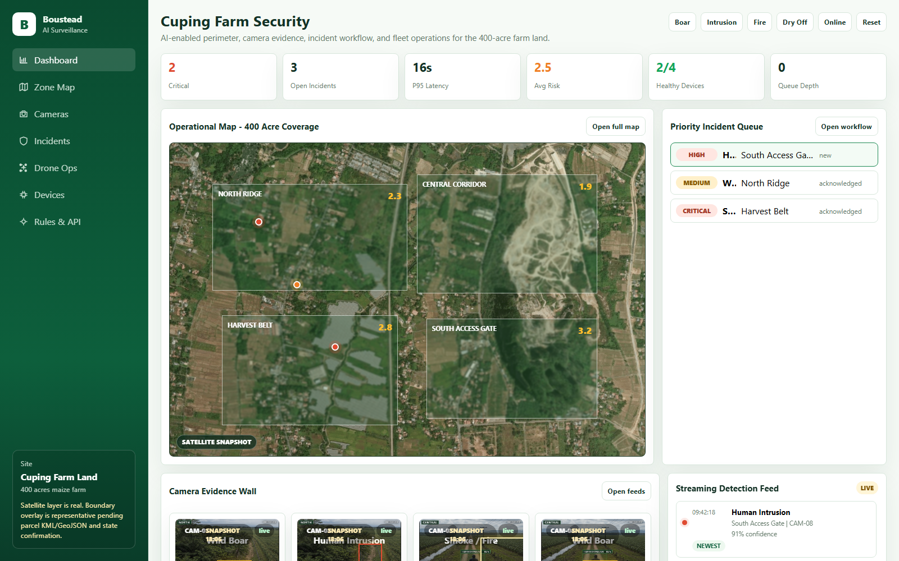

Detect
AI ingests camera, thermal, and configured source signals and flags incidents that match threat signatures.
Approve a controlled pilot where AI detection is used to support faster action, not to remove accountability.
A full working proposal for an integrated surveillance platform that detects, validates, and escalates wild boar incursion, human intrusion, arson intent, and dry-weather fire risk across Boustead Cuping farm land.
Each step below is what happens in real operations. This keeps the proposal commercially simple, auditable, and easy to execute.
AI ingests camera, thermal, and configured source signals and flags incidents that match threat signatures.
Rules remove duplicates and low-value noise, then prioritize by severity, zone, and confidence for operator attention.
Every flagged event is mapped to an accountable user, with a clear incident queue, zone context, and required action.
The responsible operator confirms the event by reviewing evidence and choosing the correct validation state.
Operators close with patrol response, false-positive tagging, drone verification, or approved escalation.
Each transition is logged with timestamps and evidence for SLA reporting, board visibility, and model tuning.
Prioritized candidate events only. Includes thermal lane for smoke/fire confidence in low-light and fog.
400-acre operating view, risk sectors, and quick drill-down for accountable field response.
Operator-ready clips and metadata: zone, confidence, source, and model state for each alert.
Assign, acknowledge, respond, and close with evidence and reason on every incident.
Dispatch rule-based verification tasks with mission state visibility and proof capture.
Gateway, OTA, heartbeat, and recovery state visible to supervisors and support teams.
Thresholds, schedules, escalation policy, response mapping, and audit-compatible integrations.
Replay-safe zero-hour lane for fire, intrusion, and network instability events.
Use these controls, then follow the same six-step sequence every shift.
| Threat class | Recommended use | Escalation direction |
|---|---|---|
| Wild Boar | North ridge and harvest belt patrol escalation during evening and early morning windows. | Operator validation, patrol dispatch, trend logging. |
| Human Intrusion | Gate, access road, perimeter breach, and central corridor detection. | Security dispatch, evidence capture, incident audit trail. |
| Smoke / Fire | All zones with dry-weather preset and faster severity promotion. Thermal hotspot confirmation is enabled for night and low-visibility periods. | Zero-hour callout, supervisor alert, drone verification. |
| Arson Risk | Night movement patterns, suspicious stopping behavior, and repeated presence near vulnerable zones. | Supervisor review before high-severity escalation. |
Ingest + local filtering keep signal stable before it reaches the platform.
Event and incident APIs create one canonical timeline for every alert.
Dashboard, maps, and workflow screens are for operator action, not passive viewing.
APIs connect dispatch, drone triggers, and reporting without breaking core workflow.
Access control and audit logging protect evidence and operational trust.
AI reduces detection time, but human operators own final resolution. A boar alert, intrusion flag, smoke warning, or arson-risk review should not disappear after detection. Every flagged issue needs an owner, acknowledgement, resolution outcome, evidence trail, and audit record.
Use these screens in this order to validate the sequence: control overview, zone context, evidence, verification, and rules.

Define stack, repositories, roles, and delivery plan. Confirm legal survey scope, site permissions, SOP ownership, escalation contacts, incident log policy, and emergency stop expectations.
Adapt core backend services, authentication, incident API, operator model, event schema, and admin dashboard shell into the target environment.
Set up AI ingest contracts, inference orchestration, threat classifiers, threshold controls, rule engine, and audit event capture with evidence linkage.
Integrate camera, thermal, and sensor feeds. Validate asset inventory, power and link resilience, coverage of blind spots, backhaul redundancy, and clip packaging.
Run scripted tests for boar, intrusion, fire/smoke, and arson-risk scenarios. Verify confidence bands, duplicate-event control, false-positive suppression, and HITL acknowledgement timing.
Train operators on acknowledgment and resolution paths. Execute dispatch-to-closure drills, escalation timing checks, evidence handoff, and incident review cadence.
Measure SLA stability, unresolved incident aging, and human validation latency. Run failover, offline queue, and webhook retry checks before independent acceptance.
Approve full-zone scale only after acceptance gates are passed, then extend sectors with ongoing KPI reviews and reliability tuning.
Camera feed integration, dashboard, zone map, basic AI detection, and incident workflow.
Expanded camera sectors, device health, OTA, rules engine, APIs, evidence retention, and reports.
Hybrid edge, thermal additions, drone response, redundant connectivity, zero-hour support, and advanced audit.
Coverage design must be based on official KML/GeoJSON, not only the representative prototype boundary.
Validate crop growth, vegetation, night visibility, rain, dust, fog, and blind spots.
Model accuracy must be proven from site conditions rather than generic demo assumptions.
Drone use requires legal, safety, weather, dock location, wind-limit, and response procedure confirmation.
Connectivity and power resilience must be surveyed for towers, gateways, edge devices, and offline buffer behavior.
Cybersecurity, role access, audit retention, signed payloads, and OTA approval requirements must be confirmed.
Next, confirm boundary data, finalize zone ownership, and run the pilot with the six-step flow active for measurable SLA, evidence, and closure outcomes.
Decision request: approve pilot scope, hitl policy, and KPI gates as the first commercial commitment.